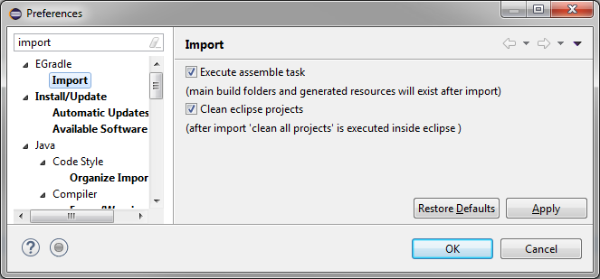

User guide
User guide
Import gradle projects
You can import projects in different ways, all are working:
New projects
When you want to start a new gradle project you should use the EGradle New Project Wizard
which is described here. It is the easiest way to
create new gradle projects out of the box in eclipse and automatically import them. Of course you are able to create file structure and build files etc. manually and import as existing project(s) as described
in the next steps.
Import existing gradle projects
Preconditions
EGradle does no magic to your build files. You have to apply the 'eclipse' plugin inside your build.gradle file.

Top
Import gradle root and all subprojects by EGradle importer
EGradle contains an importer - simply call "File->Import..." and enter "gradle"


The settings for gradle root project path, global java home
settings and gradle call type are initially copied from current
preferences - if there exists a setup.
What happens?
What happens when you call finish button?
- All eclipse projects which are representatives of the new gradle root project location are closed
- A gradle call "cleanEclipse eclipse" is executed
- If the gradle call is sucessful:
- Auto build will be temporary deactivated if enabled
- Old subprojects are deleted (without content)
- Old Virtual root project (if existing) is removed
- The new generated eclipse sub projects are imported into workspace
- Assemble task will be executed - so build folders do exist (except when deactivated in preferences)i>
- Eclipse projects are refreshed
- Full clean build is executed for all projects inside eclipse(except when deactivated in preferences)i>
- Gradle build folders are automatically derived if derive
feature is enabled in preferences
- When auto build was enabled before import, auto build will be reactivated
-
If the root project is a multi project,
a new Virtual root project will be created, if it's just a single gradle project
no virtual root project is created (because unnecessary - all stuff is inside single project itself)
- Your entered values are used as new preferences for EGradle
If the gradle call was NOT sucessful the former operations are undo'ed:
- The former closed projects will be reopened
Top
Reimporting current root project
What happens when you keep the settings of current preferences?
The same as described above. But when do you need this? When you switch between branches
it can happen that you renamed projects, added or deleted projects etc. The branch switch will
leave "zombie" projects or new projects (which maybe are referenced) are not in workspace. The
import process with same settings will all do this automatically...
There exists a convenient action for this use case: In every project associated with current gradle root project inside
context menu you got the import action:
Top
Import preferences
The importer has got it's own preferences page where you can setup
some behaviour:

Execute assemble task
When this option is enabled, the assemble task will be called after
EGradle has imported the projects into eclipse. This will build
main output and build folders but no test outputs.
If you deactivate this option you will not have auto derived build folders after import, because no build folders will be created.
Clean eclipse projects
When enabled a full "clean all projects" will be executed after import is done, so eclipse
bin folders will be recreated and eclipse and gradle outputs are in sync.
Top
Import by standard eclipse way
This is the classic way if you do not want to use the EGradle importer mechanism.
After Setup is done for your root project,
you can use either
- EGradles
refresh eclipse dependencies button or
- use a console of your choice and call inside root project the
gradle task "eclipse".
After this is done, use "File - import ... existing projects"
inside eclipse and import all projects from root folder.
 |
You should not try to import the gradle root project itself
as a normal eclipse project. Instead use the Virtual root project feature!
|
Top